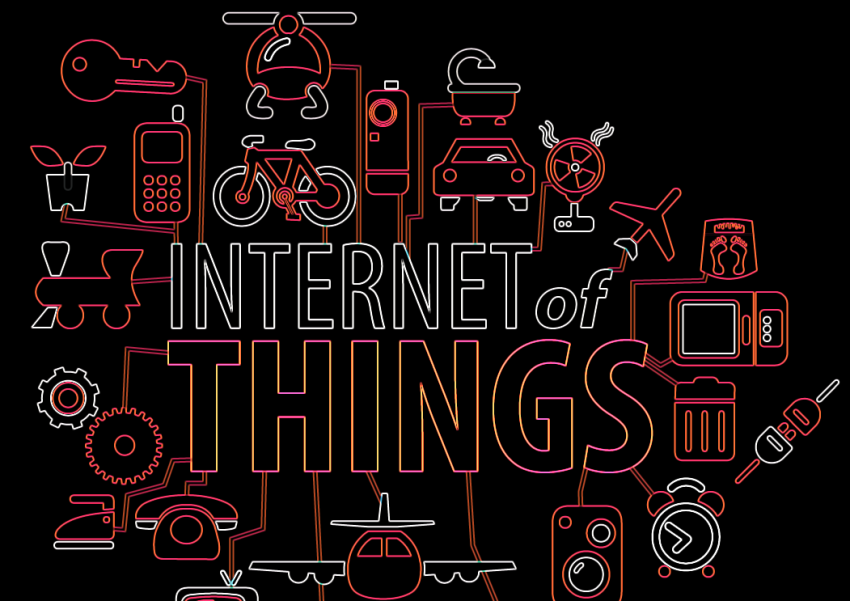
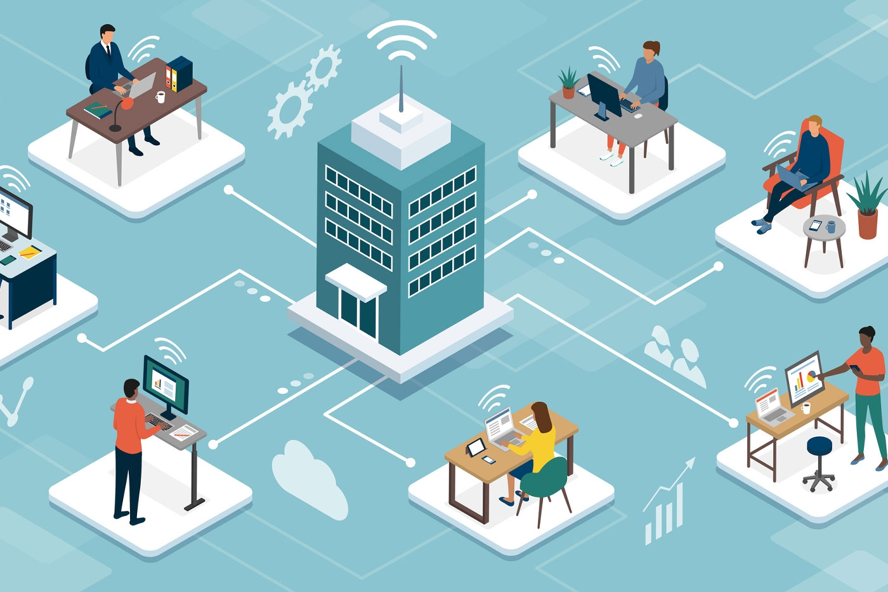
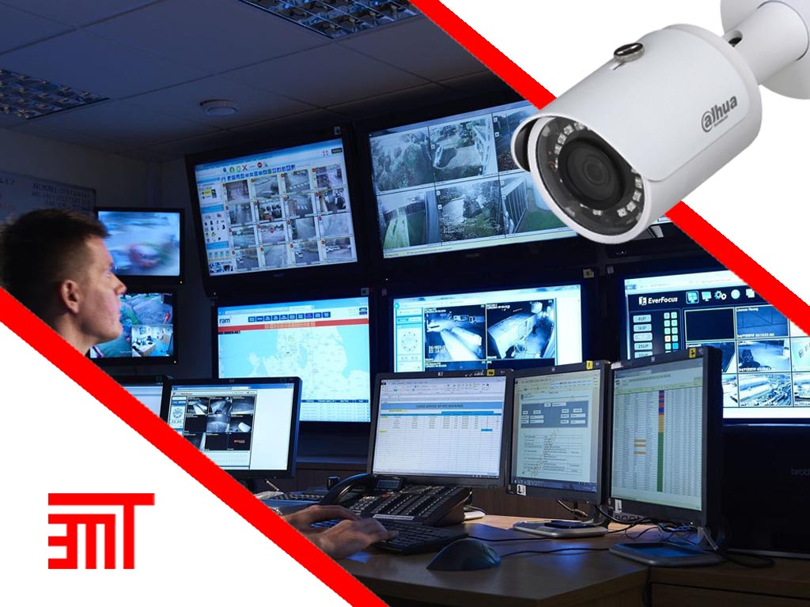
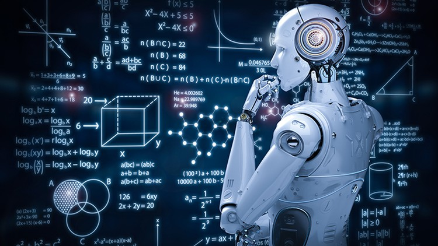
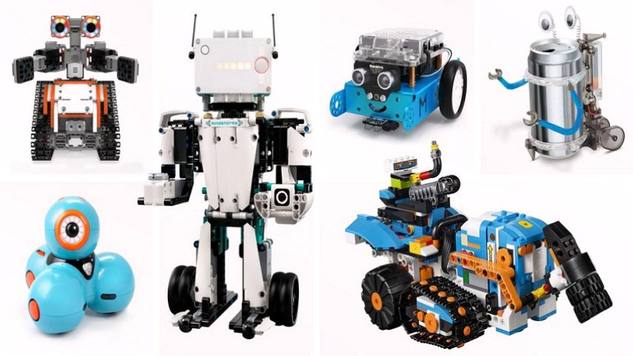
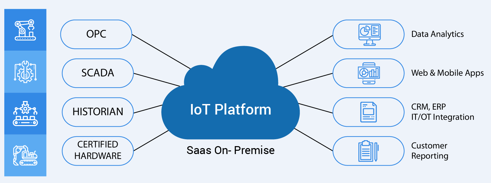
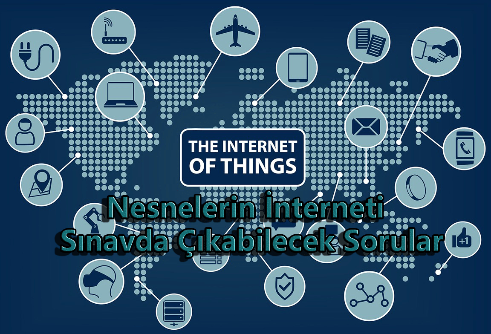
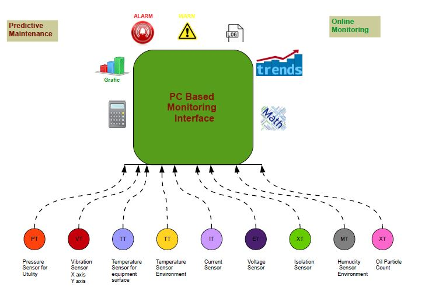
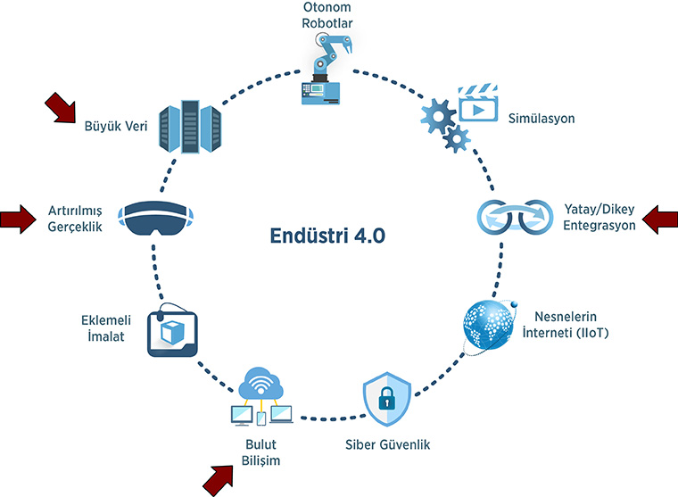

fiziksel nesnelerin internet üzerinden birbirleriyle ve diğer sistemlerle iletişim kurabildiği bir teknoloji alanını ifade ede!

| İşimiz |
Uygulama Projeleri |
Akıllı Güvenlik Sistemleri |
|
| İnsan Kaynakları ve Ofis Yönetim |
İnsan Kaynakları ve Ofis Yönetimi, modern işletmelerde verimliliği artırmak, çalışan memnuniyetini sağlamak
| İK Yönetim Sistemleri (HRMS) |
Uzaktan Çalışma ve İletişim Araçları |
Güvenlik Sistemleri |
Çalışan verilerini yönetmek, bordro işlemlerini otomatikleştirmek ve işe alım süreçlerini optimize etmek için kullanılır.
İK yönetim sistemleri, personel bilgilerini güncel tutmak, izinleri yönetmek. |
 Çalışanların uzaktan çalışma kabiliyetlerini artırmak için video konferans, anlık mesajlaşma ve işbirliği araçları.
Dijital işbirliği platformları, ekipler arası etkileşimi artırmak ve projeleri daha etkili bir şekilde yönetmek için kullanılır.
|
 Akıllı kapı kilidi sistemleri, izin tabanlı erişim kontrolü ve güvenlik kameraları.
Akıllı alarm sistemleri, ofis içinde ve çevresinde olası güvenlik ihlallerine karşı uyarılar gönderir.
|
Daha fazla örnek için tıklayın Burada
|
| Eğitim Robotları |
Eğitim robotları, eğitim ve öğrenme süreçlerinde kullanılan robotik sistemlerdir. Bu robotlar
| Programlama Eğitimi |
Kodlama Eğitimi |
Robotik ve Mühendislik Eğitimi |
Robotların programlanması, öğrencilere temel programlama becerilerini öğretebilir.
Öğrenciler, robotlara hareket, ses ve ışık kontrolü gibi komutlar vererek temel programlama mantığını öğrenirler..
|
 Robotlar, öğrencilere bilgisayar programlamayı öğretmek ve kodlama becerilerini geliştirmek için kullanılabilir.
Çeşitli programlama dilleri ve mantık yapısı, robotlar aracılığıyla öğrencilere öğretilebilir..
|
 Eğitim robotları, öğrencilere temel robotik prensiplerini ve mühendislik kavramlarını öğretmek için kullanılabilir.
Robotlar, basit makine tasarımları, mekanik prensipleri ve elektronik devreleri öğrencilere uygulamalı olarak öğretebilir
|
Daha fazla örnek için tıklayın.Burada
|
| Dijital İşaretlemeler ve Yorumlar |
Dijital işaretlemeler ve yorumlar, çeşitli dijital platformlarda belgeleri, projeleri veya diğer içerikler
| Elektronik Belge İşaretleme |
Proje İşaretleme ve İşbirliği |
Eğitim ve Sınav İşaretleme |
|  PDF'ler, Word belgeleri veya diğer dijital belgeler üzerinde doğrudan işaretlemeler yapma imkanı sunar.
Metin vurgulama, not ekleme, çizim yapma ve diğer işaretleme seçenekleri içerir..
|
Profesyonel ortamlarda, işbirliği projelerinde dijital işaretleme kullanılabilir.
Ekibin üyeleri, projeler üzerinde işaretlemeler yaparak geribildirim sağlar ve düzenlemeler yapabilir.
|
 Öğretmenlerin öğrenci ödevlerini değerlendirmek, sınavları düzenlemek ve notlar vermek için dijital işaretleme araçları kullanılabilir.
İşaretleme süreçleri genellikle daha hızlı ve geri bildirim sağlama süreci daha etkili olabilir.
|
Daha fazla örnek için tıklayın. Burada
|
| Üretim ve Malzeme Takibi |
Üretim ve malzeme takibi, bir işletmenin üretim süreçlerini yönetmek ve malzeme
| RFID Teknolojisi |
Üretim İzleme Sistemleri |
Sensör ve IoT Entegrasyonu |
 RFID (Radyo Frekansı Tanımlama) etiketleri, malzemelerin ve ürünlerin gerçek zamanlı olarak izlenmesini sağlar.
Bu teknoloji, elle okuma veya tarama işlemine gerek kalmadan malzeme akışını otomatik olarak izleyebilir. |
 Üretim izleme sistemleri, üretim süreçlerini gerçek zamanlı olarak izleyerek performansı ölçer.
Verimlilik, üretim hızı, hammadde kullanımı gibi faktörleri ölçerek iyileştirmeye yönelik kararlar alınmasını sağlar.. |
 Akıllı sensörler ve Nesnelerin İnterneti (IoT) cihazları, üretim makinelerini ve malzeme depolarını izlemek için kullanılır.
Gerçek zamanlı veri sağlayarak hataları tespit etmeye ve bakım ihtiyaçlarını belirlemeye yardımcı olur.. |
Daha fazla örnek için tıklayın.Burada
|